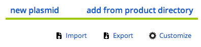

Buttons
Links vs Buttons
Labguru's power appears to be the connective tissue between different pieces of information, whether as notes, protocols, attachments and linked resources rather than the individual silos of information.
As such, rather than have each of these links called out as different button types, we reduce the visual clutter of the UI and use classic blue links where that is possible. Combined with lots of whitespace, this should make it fast and easy to follow the trail of information (if not understand the information itself!)
To accentuate this idea, major action "buttons" on pages are rendered as large blue text links, with a branded line to literally underline the point. A good example is in the top/right of a data/index table for specimens:
Another example at the end of a data entry form...
So, when constructing new pages, see if this method can work before constructing some new button type.